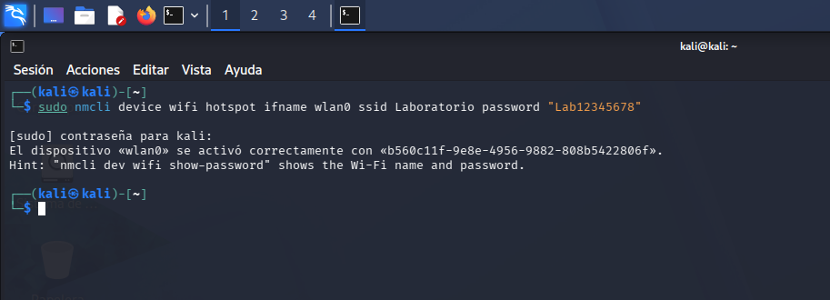
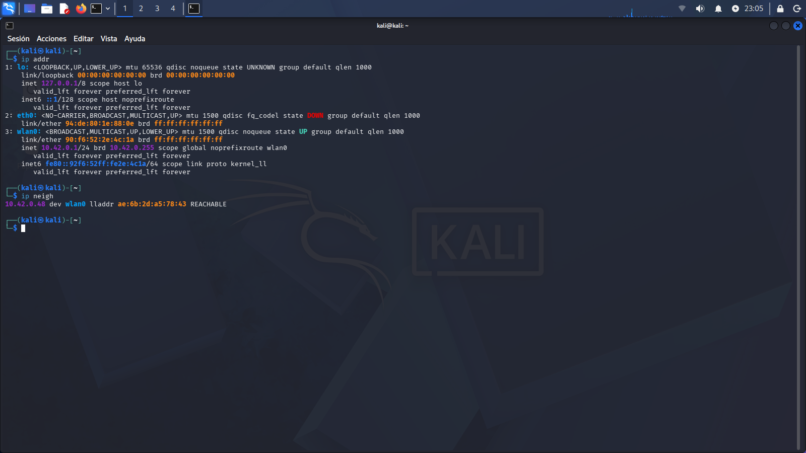
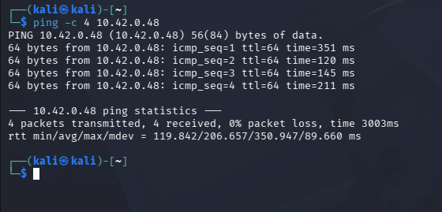
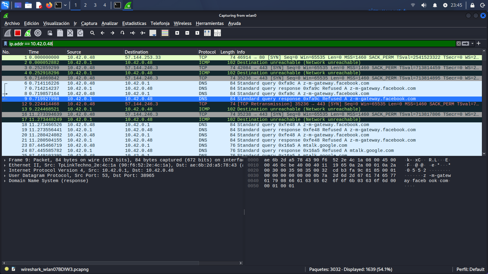
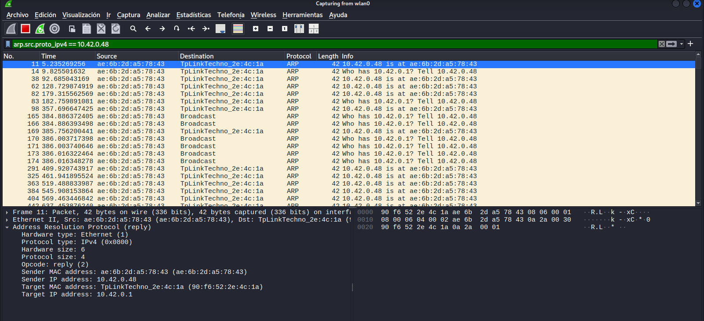
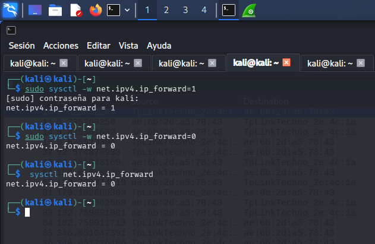

Creación del hostpot en kali
Se creó una red Wi-Fi de laboratorio desde la maquina kali. La interfaz wlan0 se configuró como punto de acceso y permitir la conexión del celular.

Identificación de hosts
Con "ip addr" se identificó la dirección IP de la maquina kali. Y con "ip neigh" se identificó el dispositivo conectado y su respectiva mac.

Comprobación de comunicación
Se comprobó la conectividad entre kali y el dispositivo mediante un ping.

Captura del tráfico del dispositivo
Mediante Wireshark se aplicó un filtro utilizando la dirección ip, Se observoo paquetes TCP, DNS e ICMP generados por este mismo. Debido a la falta de internet algunas respuestas dicen Network unreachable.

Obbservamos el funcionamiento de ARP
Wireshark permitió observar el funcionamiento del protocolo ARP.

Activamos el IPv4 Forwarding
Se habilitó el reenvío IPv4. Permitiendo que el sistema Linux reenvíe paquetes entre redes o interfaces.
